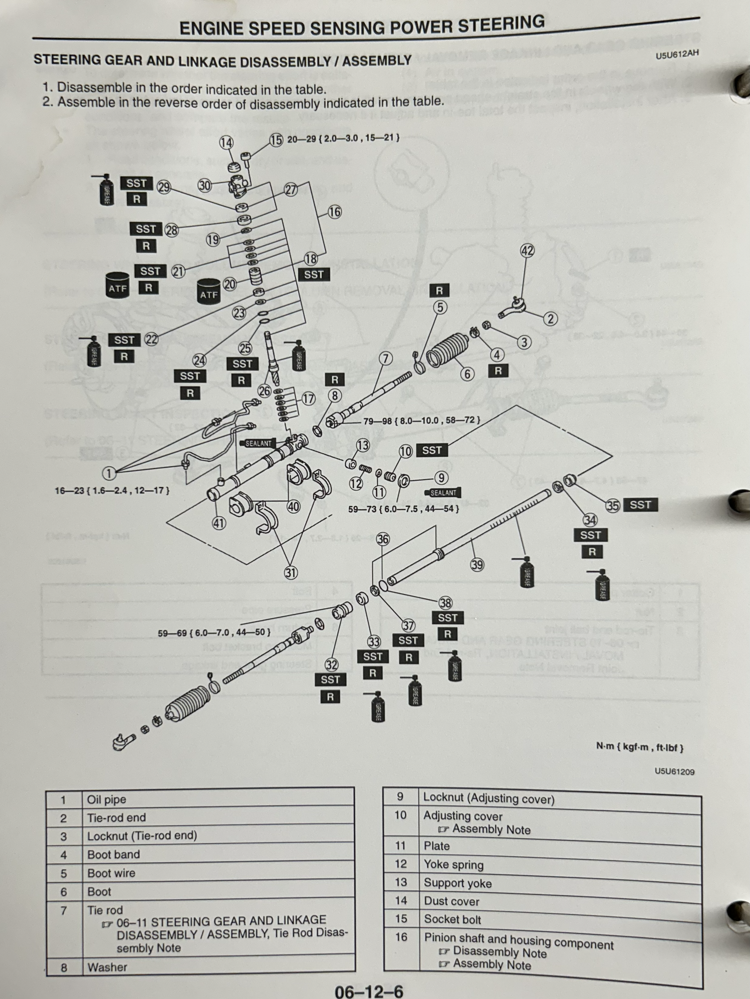
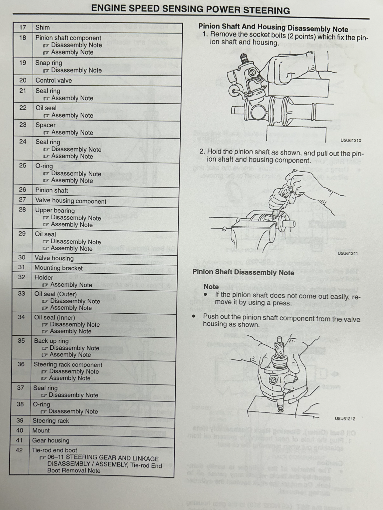
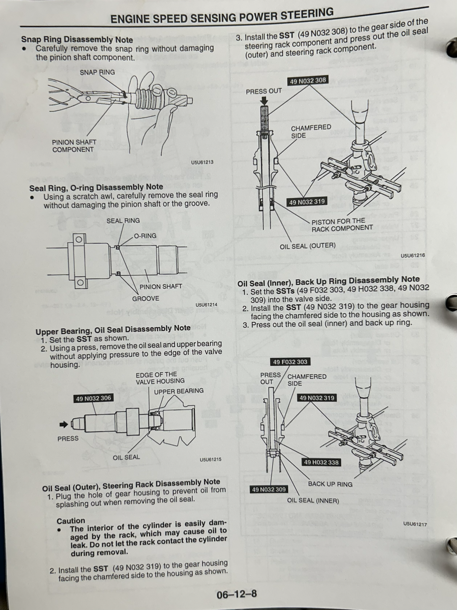
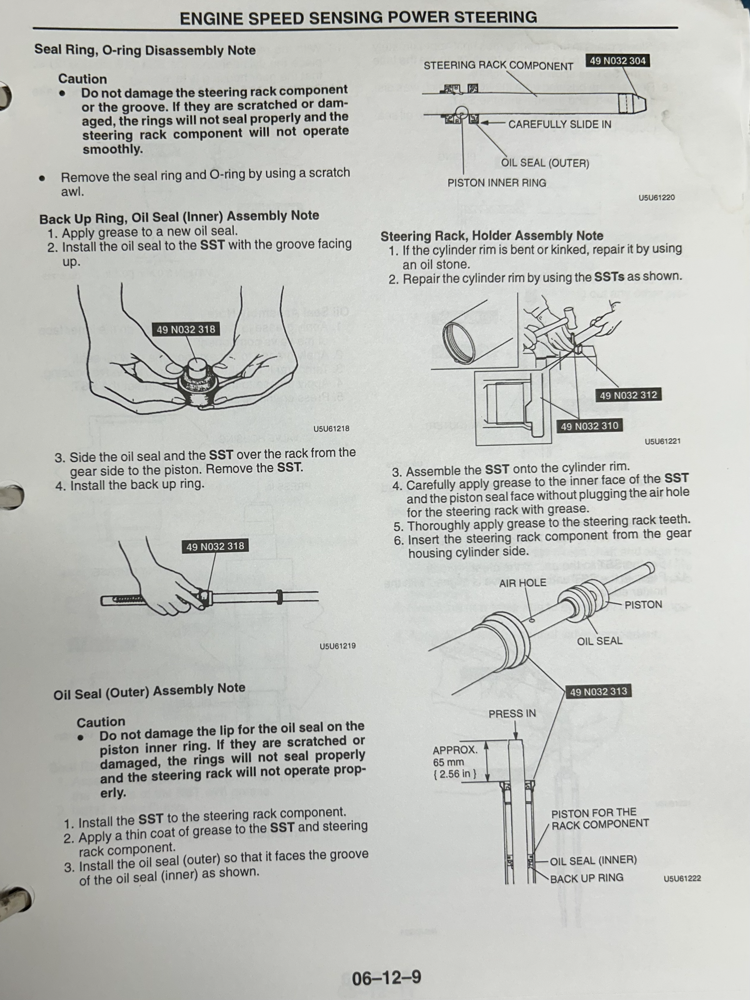
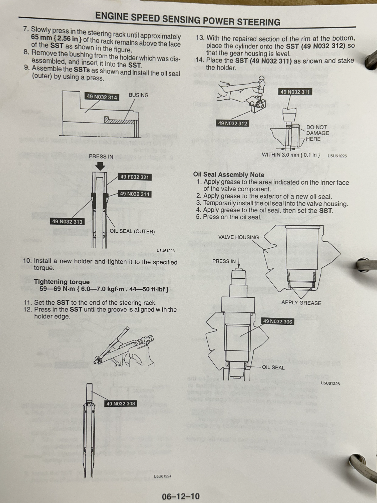
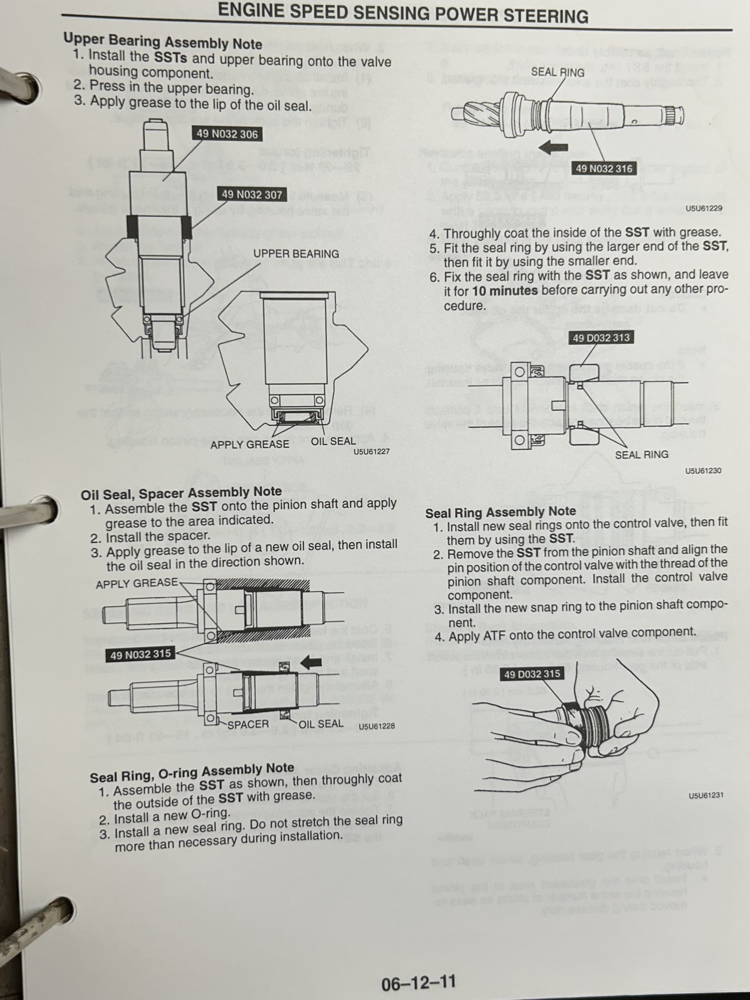
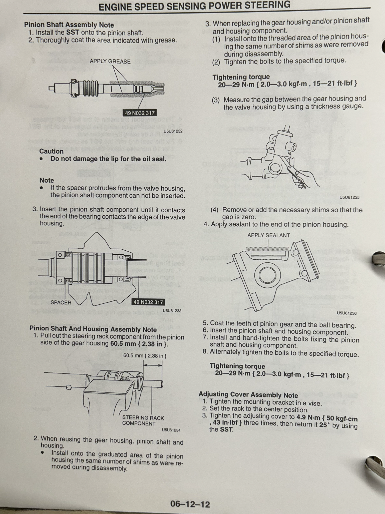
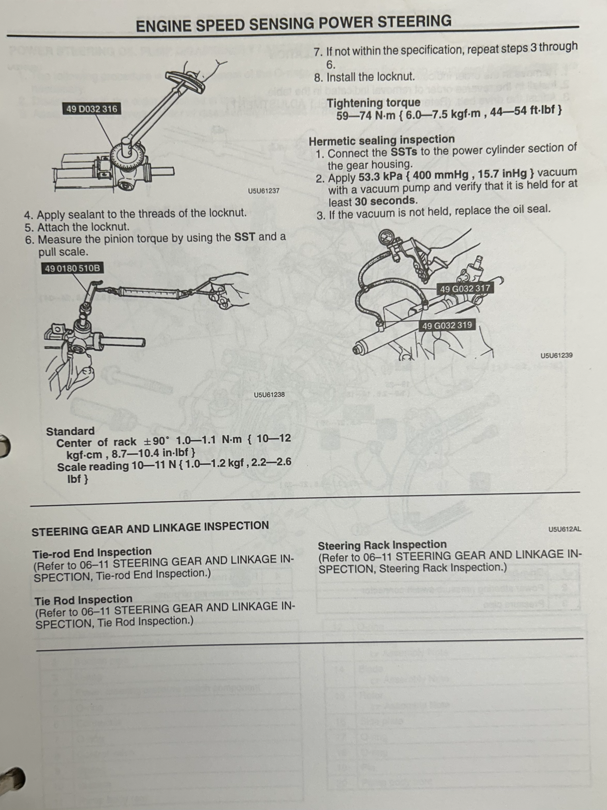

Power steering vs De-powered
Retaining your miata power steering will take alot of time and fabrication skills. Plus if you run the conventional PS pump that uses a pulley from an Rx7 or Miata it could hinder some preformance. Thats why I chose to depower my rack and also because it wouldn't fit due to the hardlines being in the way of the engine. You will need to weld a little since the miata rack causes slight fitment issues with the engine due to the hard lines. For street racing its good having PS delete but auto crossing proves a little difficult even with muscles. It makes it difficult initiate a drift and make the snappy inputs you need. Thats why I'm looking into an electric powersteering either from a nissan leaf or Toyota Prius epas. I'll update the site when I figure it out and made a video for you to refrence.
How to Rebuild or De-Power Steering rack
I uploaded the pages from the official 1997 Miata shop manual. To save space on the site I uploaded the steps on rebuilding the rack, if you are depowering you can ignore most of it. Its pretty self explanitory the only diffrence is that if you are PS delete, you will have to cut out the seal ring (#37 on diagram) and shave then weld the holes that the hardlines go in. If you dont cut the seal ring the air trapped inside the chamber will make it impossible to turn past a certian point. Since these racks are so old you'll most likely leak or will leak from the inner and outer oil seal (#34, #35). Keep them on to help keep moisture and debris from entering if you have bad boots. Since we aren't running any fluid in it you should lather the steereing rack component (#36) and pinion shaft (#26) in high temp grease. After that jjust reassemble it and install it in the car make sure the steering rack has even amount of runout coming from the gear housing (#41) prior to reconnecting it with the steering column.








Suspension
There is an ocean of brands for parts out there for the miata. I was not going to research them all or test out diffrent ones so I went with what some of my other miata buddies recommended and didn't recommend. Some cheap parts are better than the expensive parts but its hard to tell. While there are a ton of parts there aren't very much reviews or non sponsered ones. The Lucky7Racing front subframe doesn't have Top Dead Center marking like the OEM subframe does for the control arm bolts. It would be difficult to tell the hash marks on the washer and affect alignment accurancy so I got the V8R Pro-Series so I could measure the distance on the threads to accuratly set TOE and Camber. I sold my rear ones and put the OEM ones back on because I didn't think there was a point since I could accuratly set my alignment due to it haveing the Top Dead Center hash mark.
Here are the parts I used: